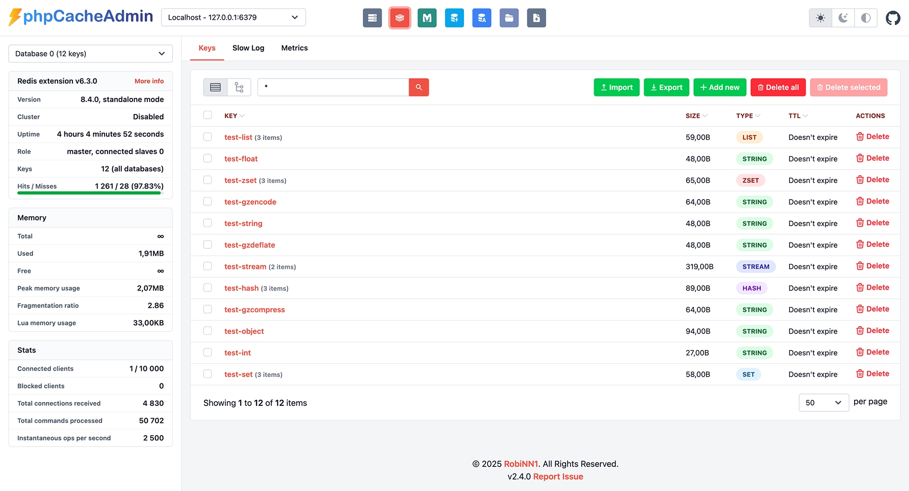
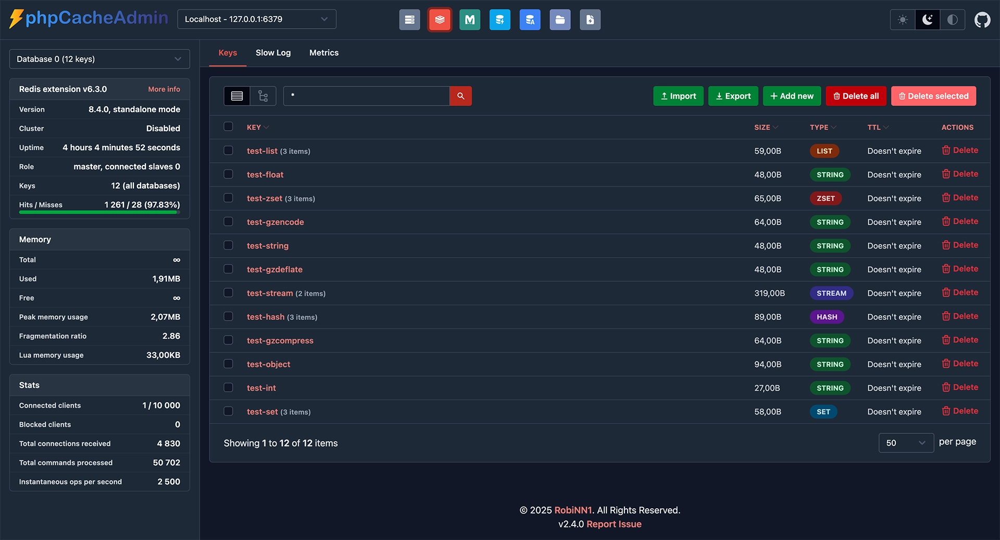

The Modern GUI for Redis, Memcached, OPCache & APCu
A powerful, extensible admin dashboard for Redis, Memcached, OPCache and APCu. Visualize real-time metrics, manage keys and monitor server performance through a modern web GUI.
Zero Dependencies
Docker Ready
PHP 8.2+
 
Supported Cache Systems
Manage all your PHP caching backends from one beautiful interface
Redis
Minimum version 4.0 · Phpredis extension or Predis (bundled)
- Server statistics overview
- Metrics: Memory, Fragmentation, Hit rate, Commands per second
- Key Management (full CRUD)
- Import & Export keys
- Supports all Redis data types
- Slowlog monitoring
- Cluster Mode support
- ACL (Access Control List) support
- Smart retrieval (SCAN & KEYS support)
- Multi-server switching
- Database switching
Memcached
Minimum version 1.4.31 · No extension required
- Server statistics overview
- Metrics: Hit rate, Memory, Requests
- Key Management (full CRUD)
- Import & Export keys
- Slabs & Items information
- Commands & Traffic statistics
- Request distribution details
- Multi-server switching
OPCache
Extension required
- Memory usage statistics
- View all cached scripts
- Invalidate specific scripts
- Optimization insights
- Hit & Miss metrics
APCu
Extension required
- Full memory breakdown
- Hit & Miss visualization
- Key Management (CRUD)
- Import & Export
- Fragmentation analysis
Realpath
Stat Cache Monitor
- Cache memory usage
- View cached file paths
- Clear/Invalidate cache
- Path mapping inspection
- Dir vs File distinction
Get Started in Seconds
Choose the installation method that fits your workflow.
2
Unzip & Config
Unzip the folder to your web directory. Optionally copy config.dist.php to config.php.
Updating? Replace the files and delete the /tmp/twig folder.
Run with a single command
The fastest way to get started. Runs on port 8080 by default.
docker run -p 8080:80 -d --name phpcacheadmin -e "PCA_REDIS_0_HOST=redis_host" -e "PCA_REDIS_0_PORT=6379" -e "PCA_MEMCACHED_0_HOST=memcached_host" -e "PCA_MEMCACHED_0_PORT=11211" robinn/phpcacheadmin Need more configuration? Check out the Environment Variables documentation
Install via Composer
Integrate into existing PHP projects.
composer require robinn/phpcacheadmin Embed in your application
// Copy config file from the vendor folder or GitHub.
// Set config path
\RobiNN\Pca\Config::setConfigPath(__DIR__.'/pca.php');
// Render dashboard
echo (new \RobiNN\Pca\Admin())->render(false);